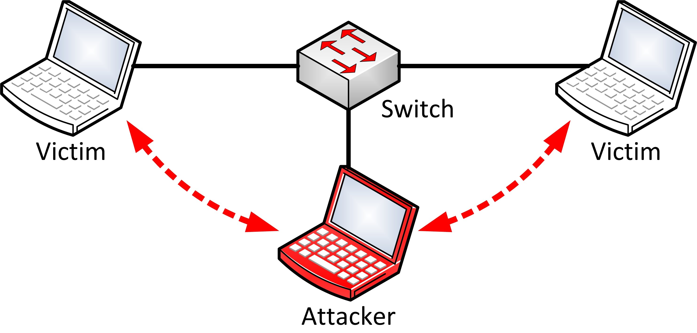

Documentation¶
BetterCAP is a powerful, flexible and portable tool created to perform various types of MITM attacks against a network, manipulate HTTP, HTTPS and TCP traffic in realtime, sniff for credentials and much more.
Check on the Next button below and start hacking!
Introduction¶
BetterCAP is a powerful, flexible and portable tool created to perform various types of MITM attacks against a network, manipulate HTTP, HTTPS and TCP traffic in realtime, sniff for credentials and much more.
You Are the Man in the Middle¶
What is a MITM ( Man In The Middle ) attack? Let's ask Wikipedia!
In cryptography and computer security, a man-in-the-middle attack (often abbreviated to MITM, MitM, MIM, MiM attack or MITMA) is an attack where the attacker secretly relays and possibly alters the communication between two parties who believe they are directly communicating with each other. Man-in-the-middle attacks can be thought about through a chess analogy.
Mallory, who barely knows how to play chess, claims that she can play two grandmasters simultaneously and either win one game or draw both. She waits for the first grandmaster to make a move and then makes this same move against the second grandmaster. When the second grandmaster responds, Mallory makes the same play against the first. She plays the entire game this way and cannot lose.
A man-in-the-middle attack is a similar strategy and can be used against many cryptographic protocols. One example of man-in-the-middle attacks is active eavesdropping, in which the attacker makes independent connections with the victims and relays messages between them to make them believe they are talking directly to each other over a private connection, when in fact the entire conversation is controlled by the attacker. The attacker must be able to intercept all relevant messages passing between the two victims and inject new ones. This is straightforward in many circumstances; for example, an attacker within reception range of an unencrypted Wi-Fi wireless access point, can insert himself as a man-in-the-middle.
This is quite a generic description, mostly because ( if we're talking about network MITM attacks ), the logic and details heavily rely on the technique being used ( more in the spoofing section ).
Nevertheless we can simplify the concept with an example. When you connect to some network ( your home network, some public WiFi, StarBucks, etc ), the router/switch is responsible for forwarding all of your packets to the correct destination, during a MITM attack we "force" the network to consider our device as the router ( we "spoof" the original router/switch address in some way ):

Once this happens, all of the network traffic goes through your computer instead of the legit router/switch and at that point you can do pretty much everything you want, from just sniffing for specific data ( emails, passwords, cookies, etc of other people on your network ) to actively intercepting and proxying all the requests of some specific protocol in order to modify them on the fly ( you can, for instance, replace all images of all websites being visited by everyone, kill connections, etc ).
BetterCap is responsible for giving the security researcher everything he needs in one single tool which simply works, on GNU/Linux, Mac OS X and OpenBSD systems.
Use Cases¶
You might think that BetterCAP is just another tool which helps script-kiddies to harm networks ... but it's much more than that, its use cases are many, for instance:
- Many professional penetration testers find a great companion in bettercap since its very first release.
- Reverse engineers are using it in order to reverse or modify closed network protocols.
- Mobile/IoT security researchers are exploiting bettercap capabilities to test the security of mobile systems.
Why another MITM tool?¶
This is exactly what you are thinking right now, isn't it? :D But allow yourself to think about it for 5 more minutes ... what you should be really asking is:
Does a complete, modular, portable and easy to extend MITM tool actually exist?
If your answer is "ettercap", let me tell you something:
- Ettercap was a great tool, but it made its time.
- Ettercap filters do not work most of the times, are outdated and hard to implement due to the specific language they're implemented in.
- Ettercap is freaking unstable on big networks ... try to launch the host discovery on a bigger network rather than the usual /24 ;)
- Yeah you can see connections and raw pcap stuff, nice toy, but as a professional researcher I want to see only relevant stuff.
- Unless you're a C/C++ developer, you can't easily extend ettercap or make your own module.
Moreover:
- Ettercap's and MITMf's ICMP spoofing is completely useless, ours is not.
- Ettercap does not provide a builtin and modular HTTP(S) and TCP transparent proxies, we do.
- Ettercap does not provide a smart and fully customizable credentials sniffer, we do.
Installation¶
BetterCap comes packaged as a Ruby gem, meaning you will need a Ruby interpreter ( >= 1.9 ) and a RubyGems environment installed. Moreover, it is fully compatible with GNU/Linux, Mac OS X and OpenBSD platforms.
Dependencies¶
All Ruby dependencies will be automatically installed through the GEM system, however some of the GEMS need native libraries in order to compile:
sudo apt-get install build-essential ruby-dev libpcap-dev
Installing on Kali Linux¶
Kali Linux has bettercap packaged and added to the kali-rolling repositories. To install bettercap and all dependencies in one fell swoop on the latest version of Kali Linux:
apt-get update
apt-get install bettercap
Stable Release ( GEM )¶
You can easily install bettercap using the gem install GEMNAME command:
gem install bettercap
To update to a newer release:
gem update bettercap
If you have trouble installing bettercap read the following sections about dependencies.
Note
If you installed bettercap using a RVM installation, you will need to execute it using rvmsudo:
rvmsudo bettercap ...
Otherwise, if you installed it globally ( sudo gem install bettercap ) you can use sudo:
sudo bettercap ...
Development Release¶
Instead of the stable release, you can also clone the source code from the github repository, this will give you all the latest and experimental features, but remember that you're using a potentially unstable release:
git clone https://github.com/evilsocket/bettercap
cd bettercap
bundle install
gem build bettercap.gemspec
sudo gem install bettercap*.gem
Quick Start¶
Once you've installed bettercap, quickly get started with:
bettercap --help
The help menu will show you every available command line option and a few examples.
Contributing¶
As any other open source projects, there're many ways you can contribute to bettercap depending on your skills as a developer or will to help as a user.
Submitting Issues¶
If you find bugs or inconsistencies while using bettercap, you can create an Issue using the GitHub Issue tracker, but before doing that please make sure that:
- You are using a relatively new Ruby version ( >= 1.9 ) :
ruby -v. - Your GEM environment is configured properly and updated :
sudo gem update. - You are using the latest version of bettercap :
bettercap --check-updates. - The bug you're reporting is actually related to bettercap and not to one of the other GEMs.
Once you've gone through this list, open an issue and please give us as much as informations as possible in order for us to fix the bug as soon as possible:
- Your OS version.
- Ruby version you're using.
- Full output of the error ( exception backtrace, error message, etc ).
- Your network configuration:
ifconfig -a
Also, you should attach to the issue a debug log that you can generate with:
sudo bettercap [arguments you are using for testing] --debug --log=debug.log
Wait for the error to happen then close bettercap and paste the debug.log file inside the issue.
Improving the Documentation¶
If you want to help, you can improve this documentation cloning our code repository and updating the contents of the docs folder.
Pull Requests¶
If you know how to code in Ruby and have ideas to improve bettercap, you're very welcome to send us pull requests, we'll be happy to merge them whenever they comply to the following rules:
- You have at least manually tested your code, ideally you've created actual tests for it.
- Respect our coding standard, 2 spaces indentation and modular code.
- There're no conflicts with the current dev branch.
- Your commit messages are enough explanatory to us.
There're plenty of things you can to do improve the software:
- Implement a new proxy module and push it to the dedicated repository.
- Implement a new Spoofer module.
- Implement a new Sniffer credentials parser.
- Fix, extend or improve the core.
General Options¶
The following are the main options that determine the general behaviour of BetterCap, these options are not mandatory, in fact bettercap will automatically detect everything it needs in order to work, you just might need to use one or more of the following options to specify some custom behaviour in specific cases.
Examples¶
Attack specific targets:
sudo bettercap -T 192.168.1.10,192.168.1.11
Attack a specific target by its MAC address:
sudo bettercap -T 01:23:45:67:89:10
Attack a range of IP addresses:
sudo bettercap -T 192.168.1.1-30
Attack a specific subnet:
sudo bettercap -T 192.168.1.1/24
Randomize the interface MAC address during the attack:
sudo bettercap --random-mac
Options¶
-I, --interface IFACE¶
BetterCAP will automatically detect your default network interface and use it, if you want to make it use another interface ( when you have more than one, let's say eth0 and wlan0 ) you can use this option.
--use-mac ADDRESS¶
Change the interface MAC address to this value before performing the attack.
--random-mac¶
Change the interface MAC address to a random one before performing the attack.
-G, --gateway ADDRESS¶
The same goes for the gateway, either let bettercap automatically detect it or manually specify its address.
-T, --target ADDRESS1,ADDRESS2¶
If no specific target is given on the command line, bettercap will spoof every single address on the network. There are cases when you already know the IP or MAC address of your target(s), in such cases you can use this option.
--ignore ADDRESS1,ADDRESS2¶
Ignore these IP addresses if found while searching for targets.
--no-discovery¶
Do not actively search for hosts, just use the current ARP cache, default to false.
--no-target-nbns¶
Disable target NBNS hostname resolution.
--packet-throttle NUMBER¶
Number of seconds ( can be a decimal number ) to wait between each packet to be sent.
--check-updates¶
Will check if any update is available and then exit.
-h, --help¶
Display the available options.
Logging¶
These options determine how bettercap console logger is going to behave.
Examples¶
Save log output to the out.log file:
sudo bettercap --log out.log
Save log output to the out.log file and suppress terminal output:
sudo bettercap --log out.log --silent
Save log output to the out-ts.log file and enable timestamps for each line:
sudo bettercap --log-timestamp --log out-ts.log
Options¶
-O, --log LOG_FILE¶
Log all messages into a file, if not specified the log messages will be only print into the shell.
--log-timestamp¶
Enable logging with timestamps for each line, disabled by default.
-D, --debug¶
Enable debug logging, it is good practice to use this option while reporting a bug in order to have the full debug log of the program.
--silent¶
Suppress every message which is not an error or a warning, default to false.
Spoofing¶
As previously described in the introduction section, spoofing is the very hearth of every MITM attack. These options will determine which spoofing technique to use and how to use it.
BetterCap already includes an ARP spoofer ( working both in full duplex and half duplex mode which is the default ), a DNS spoofer and the first, fully working and completely automatized ICMP DoubleDirect spoofer in the world
Examples¶
Use the good old ARP spoofing:
sudo bettercap or sudo bettercap -S ARP or sudo bettercap --spoofer ARP
Use a full duplex ICMP redirect spoofing attack:
sudo bettercap -S ICMP or sudo bettercap --spoofer ICMP
Disable spoofing:
sudo bettercap -S NONE or sudo bettercap --spoofer NONE or sudo bettercap --no-spoofing
No dear 192.168.1.2, you won't connect to anything anymore :D
sudo bettercap -T 192.168.1.2 --kill
Options¶
-S, --spoofer NAME¶
Spoofer module to use, available: ARP, ICMP, NONE - default: ARP.
--no-spoofing¶
Disable spoofing, alias for --spoofer NONE / -S NONE.
--kill¶
Instead of forwarding packets, this switch will make targets connections to be killed.
--full-duplex¶
Enable full-duplex MITM, this will make bettercap attack both the target(s) and the router.
Sniffing & Credentials Harvesting¶
The builtin sniffer is currently able to dissect and print from the network ( or from a previously captured PCAP file ) the following informations:
- URLs being visited.
- HTTPS hosts being visited.
- HTTP POSTed data.
- HTTP Basic and Digest authentications.
- HTTP Cookies.
- FTP credentials.
- IRC credentials.
- POP, IMAP and SMTP credentials.
- NTLMv1/v2 ( HTTP, SMB, LDAP, etc ) credentials.
- DICT Protocol credentials.
- MPD Credentials.
- NNTP Credentials.
- DHCP messages and authentication.
- REDIS login credentials.
- RLOGIN credentials.
- SNPP credentials.
- And more!
Note
New parsers are implemented almost on a regular basis for each new release, for a full and updated list check the SNIFFING section in the "bettercap --help" menu.
Examples¶
Use bettercap as a simple local network sniffer:
sudo bettercap --local or sudo bettercap -L
Use the capture.pcap file in your home directory as a packets source:
sudo bettercap --sniffer-source ~/capture.pcap
Spoof the whole network and save every packet to the capture.pcap file in your home directory:
sudo bettercap --sniffer-output ~/capture.pcap
Spoof the whole network but only sniff HTTP traffic:
sudo bettercap --sniffer-filter "tcp port http"
Spoof the whole network and extract data from packets containing the "password" word:
sudo bettercap --custom-parser ".*password.*"
Options¶
-X, --sniffer¶
Enable sniffer.
-L, --local¶
By default bettercap will only parse packets coming from/to other addresses on the network, if you also want to process packets being sent or received from your own computer you can use this option ( NOTE: will enable the sniffer ).
--sniffer-source FILE¶
Load packets from the specified PCAP file instead of the network interface ( NOTE: will enable the sniffer ).
--sniffer-output FILE¶
Save all packets to the specified PCAP file ( NOTE: will enable the sniffer ).
--sniffer-filter EXPRESSION¶
Configure the sniffer to use this BPF filter ( NOTE: will enable the sniffer ).
-P, --parsers PARSERS¶
Comma separated list of packet parsers to enable, * for all ( NOTE: will enable the sniffer ), available: COOKIE, CREDITCARD, DHCP, DICT, FTP, HTTPAUTH, HTTPS, IRC, MAIL, MPD, MYSQL, NNTP, NTLMSS, PGSQL, POST, REDIS, RLOGIN, SNMP, SNPP, URL, WHATSAPP, default to *.
--custom-parser EXPRESSION¶
Use a custom regular expression in order to capture and show sniffed data ( NOTE: will enable the sniffer ).
About Proxying¶
Bettercap is shipped with a HTTP/HTTPS ( with SSL Stripping and HSTS Bypass ) and raw TCP transparent proxies that you can use to manipulate HTTP/HTTPS or low level TCP traffic at runtime, for instance you could use the HTTP/HTTPS proxy to inject javascripts into the targets visited pages ( BeEF would be a great choice :D ), replace all the images, etc or use the TCP one for other protocols ( downgrade encryption with STARTTLS, dump custom protocols and so forth.

Once one or more proxies are enabled, bettercap will take care of the spoofing and the firewall rules needed in order to redirect your targets' traffic to the proxy itself.
By default the builtin proxies won't do anything but logging all the requests, additionally you can specify a "module" to use and you will be able to load one of the builtin plugins ( or your own ) and manipulate all the traffic as you like.
HTTP/HTTPS¶
Bettercap is shipped with both a HTTP and a HTTPS transparent proxies that you can use to manipulate HTTP and HTTPS traffic at runtime ( inject javascripts into the targets visited pages, replace the images, etc ).
By default the builtin proxies won't do anything but logging HTTP(S) requests, but if you specify a --proxy-module argument you will be able to load one of the builtin modules ( or your own ) and manipulate HTTP traffic as you like.
Builtin modules are:
- InjectJS (
--proxy-module injectjs) : Used to inject javascript code/files inside HTML pages. - InjectCSS (
--proxy-module injectcss) : Used to inject CSS code/files inside HTML pages. - InjectHTML (
--proxy-module injecthtml) : Used to inject HTML code inside HTML pages.
HTTP/HTTPS proxy modules might want additional command line arguments, it's always a good idea to look at their specific help menus:
bettercap --proxy-module NAME -h
Sample Module¶
You can easily implement a module to inject data into pages or just inspect the requests/responses creating a ruby file and passing it to bettercap with the --proxy-module argument, the following is a sample module that injects some contents into the title tag of each html page, you can find other examples modules in the proxy modules dedicated repository.
HTTP¶
SSL Stripping¶
SSL stripping is a technique introduced by Moxie Marlinspike during BlackHat DC 2009, the website description of this technique goes like:
It will transparently hijack HTTP traffic on a network, watch for HTTPS links and redirects, then map those links into either look-alike HTTP links or homograph-similar HTTPS links.
Long story short, this technique will replace every https link in webpages the target is browsing with http ones so, if a page would normally look like:
... <a href="https://www.facebook.com/">Login</a> ...
During a SSL stripping attack its HTML code will be modified as:
... <a href="http://www.facebook.com/">Login</a> ...
Being the man in the middle, this allow us to sniff and modify pages that normally we wouldn't be able to even see.
HSTS Bypass¶
SSL stripping worked quite well until 2010, when the HSTS specification was introduced, Wikipedia says:
HTTP Strict Transport Security (HSTS) is a web security policy mechanism which helps to protect websites against protocol downgrade attacks and cookie hijacking. It allows web servers to declare that web browsers (or other complying user agents) should only interact with it using secure HTTPS connections, and never via the insecure HTTP protocol. HSTS is an IETF standards track protocol and is specified in RFC 6797.
Moreover HSTS policies have been prebuilt into major browsers meaning that now, even with a SSL stripping attack running, the browser will connect to HTTPS anyway, even if the http:// schema is specified, making the attack itself useless.
Picture credits to Scott Helme
For this reason, Leonardo Nve Egea presented sslstrip+ ( or sslstrip2 ) during BlackHat Asia 2014. This tool was an improvement over the original Moxie's version, specifically created to bypass HSTS policies. Since HSTS rules most of the time are applied on a per-hostname basis, the trick is to downgrade HTTPS links to HTTP and to prepend some custom sub domain name to them. Every resulting link won't be valid for any DNS server, but since we're MITMing we can resolve these hostnames anyway.
Let's take the previous example page:
... <a href="https://www.facebook.com/">Login</a> ...
A HSTS bypass attack will change it to something like:
... <a href="http://wwww.facebook.com/">Login</a> ...
When the "victim" will click on that link, no HSTS rule will be applied ( since there's no rule for such subdomain we just created ) and the MITM software ( BetterCap in our case ^_^ ) will take care of the DNS resolution, allowing us to see and alter the traffic we weren't supposed to see.

Demonstration¶
The following video demonstrates how to perform SSL Stripping and HSTS Bypass attacks in order to capture the Facebook login credentials of a specific target.
HTTPS¶
Server Name Indication¶
Server Name Indication (SNI) is an extension to the TLS computer networking protocol by which a client indicates which hostname it is attempting to connect to at the start of the handshaking process. This allows a server to present multiple certificates on the same IP address and TCP port number and hence allows multiple secure (HTTPS) websites (or any other Service over TLS) to be served off the same IP address without requiring all those sites to use the same certificate.
Using the SNI callback, BetterCAP's HTTPS proxy is able to detect the upstream server host using the following logic:
- Client connects to a HTTPS server while being transparently proxied by us.
- We catch the upstream server hostname in the SNI callback.
- We pause the callback, connect to the upstream server and fetch its certificate.
- We resign that certificate with our own CA and use it to serve the client.
This way, as long as you have BetterCap's certification authority PEM file installed on the target device, you won't see any warnings or errors since correct certificate will be spoofed in realtime.
There're a couple of caveats of course:
- If you don't install either bettercap's CA or your custom CA on the target device, you'll see warnings and errors anyway (duh!).
- Every application using certificate/public Key pinning will detect the attack even with the CA installed.
Installing Certification Authority¶
Since version 1.4.4 BetterCAP comes with a pre made certification authority file which is extracted in your home directory the first time you'll launch the HTTPS proxy, you'll find the file as:
~/.bettercap/bettercap-ca.pem
You'll need to install this file on the device you want to transparently proxy HTTPS connection for, the procedure is OS specific as mentioned in a previous blog post:
- iOS - http://kb.mit.edu/confluence/pages/viewpage.action?pageId=152600377
- iOS Simulator - https://github.com/ADVTOOLS/ADVTrustStore#how-to-use-advtruststore
- Java - http://docs.oracle.com/cd/E19906-01/820-4916/geygn/index.html
- Android/Android Simulator - http://wiki.cacert.org/FAQ/ImportRootCert#Android_Phones_.26_Tablets
- Windows - http://windows.microsoft.com/en-ca/windows/import-export-certificates-private-keys#1TC=windows-7
- Mac OS X - https://support.apple.com/kb/PH7297?locale=en_US
- Ubuntu/Debian - http://askubuntu.com/questions/73287/how-do-i-install-a-root-certificate/94861#94861
- Mozilla Firefox - https://wiki.mozilla.org/MozillaRootCertificate#Mozilla_Firefox
- Chrome on Linux - https://code.google.com/p/chromium/wiki/LinuxCertManagement
Once you've done, just use the --proxy-https bettercap command line argument to enable the HTTPS proxy and you're ready to go.
Options¶
--proxy-upstream-address ADDRESS¶
If set, only requests coming from this server address will be redirected to the HTTP/HTTPS proxies.
--allow-local-connections¶
Allow direct connections to the proxy instance, default to false.
--proxy¶
Enable HTTP proxy and redirects all HTTP requests to it, default to false.
--proxy-port PORT¶
Set HTTP proxy port, default to 8080.
--no-sslstrip¶
Disable SSL stripping and HSTS bypass.
--log-http-response¶
Log HTTP responses.
--proxy-module MODULE¶
Ruby proxy module to load, either a custom file or one of the following: injectcss, injecthtml, injectjs.
--http-ports PORT1,PORT2¶
Comma separated list of HTTP ports to redirect to the proxy, default to 80.
--proxy-https¶
Enable HTTPS proxy and redirects all HTTPS requests to it, default to false.
--proxy-https-port PORT¶
Set HTTPS proxy port, default to 8083.
--proxy-pem FILE¶
Use a custom PEM CA certificate file for the HTTPS proxy, default to ~/.bettercap/bettercap-ca.pem.
--https-ports PORT1,PORT2¶
Comma separated list of HTTPS ports to redirect to the proxy, default to 443.
TCP¶
If you want to actively modify packets of a TCP protocol which is not HTTP or HTTPS, you'll need the TCP proxy. This event-based proxy will allow you to intercept anything sent/received to/from a specific host using your own custom module.
Sample Module¶
The following example module won't do anything but dumping the data being transmitted from/to the target, you can access the event object in order to modify the data on the fly.
If you want to load such module and dump all the ( let's say ) MySQL traffic from/to the mysql.example.com host you would do:
sudo bettercap --tcp-proxy-module example.rb --tcp-proxy-upstream mysql.example.com:3306
And you would be ready to go.
Options¶
--tcp-proxy¶
Enable the TCP proxy ( requires other --tcp-proxy-* options to be specified ).
--tcp-proxy-module MODULE¶
Ruby TCP proxy module to load.
--tcp-proxy-port PORT¶
Set local TCP proxy port, default to 2222.
--tcp-proxy-upstream-address ADDRESS¶
Set TCP proxy upstream server address.
--tcp-proxy-upstream-port PORT¶
Set TCP proxy upstream server port.
--tcp-proxy-upstream ADDRESS:PORT¶
Set TCP proxy upstream server address and port ( shortcut for --tcp-proxy-upstream-address ADDRESS and --tcp-proxy-upstream-port PORT ).
UDP¶
If you want to actively modify packets of a UDP protocol, you'll need the UDP proxy. This event-based proxy will allow you to intercept anything sent/received to/from a specific host using your own custom module.
Sample Module¶
The following example module won't do anything but dumping the data being transmitted from/to the target, you can access the event object in order to modify the data on the fly.
If you want to load such module and dump all the ( let's say ) DNS traffic from/to the ns01.example.com host you would do:
sudo bettercap --udp-proxy-module example.rb --udp-proxy-upstream ns01.example.com:53
And you would be ready to go.
Options¶
--udp-proxy¶
Enable the UDP proxy ( requires other --udp-proxy-* options to be specified ).
--udp-proxy-module MODULE¶
Ruby UDP proxy module to load.
--udp-proxy-port PORT¶
Set local UDP proxy port, default to 2222.
--udp-proxy-upstream-address ADDRESS¶
Set UDP proxy upstream server address.
--udp-proxy-upstream-port PORT¶
Set UDP proxy upstream server port.
--udp-proxy-upstream ADDRESS:PORT¶
Set UDP proxy upstream server address and port ( shortcut for --udp-proxy-upstream-address ADDRESS and --udp-proxy-upstream-port PORT ).
Third Party Proxies¶
If you want to use some custom proxy of yours ( BurpSuite for instance, or some custom app you wrote ) you can still use bettercap to make the whole process easier, no more crappy shell scripts to apply custom firewall rules and launch "esotic" commands!
For instance, if you want to attack the whole network and redirect all HTTP traffic to your local BurpSuite installation ( in this example 192.168.1.2 is your computer ip address ):
sudo bettercap --custom-proxy 192.168.1.2
--custom-proxy ADDRESS¶
Use a custom HTTP upstream proxy instead of the builtin one.
--custom-proxy-port PORT¶
Specify a port for the custom HTTP upstream proxy, default to 8080.
--custom-https-proxy ADDRESS¶
Use a custom HTTPS upstream proxy instead of the builtin one.
--custom-https-proxy-port PORT¶
Specify a port for the custom HTTPS upstream proxy, default to 8083.
--custom-redirection RULE¶
Apply a custom port redirection, the format of the rule is PROTOCOL ORIGINAL_PORT NEW_PORT.
For instance TCP 21 2100 will redirect all TCP traffic going to port 21, to port 2100.
HTTP¶
You want to serve your custom javascript files on the network? Maybe you wanna inject some custom script or image into HTTP responses using a transparent proxy module but you got no public server to use? no worries dude :DA builtin HTTP server comes with bettercap, allowing you to serve custom contents from your own machine without installing and configuring other softwares such as Apache, nginx or lighttpd.
--httpd¶
Enable HTTP server, default to false.
--httpd-port PORT¶
Set HTTP server port, default to 8081.
--httpd-path PATH¶
Set HTTP server path, default to ./.
DNS¶
If you want to perform DNS spoofing, you must specify the --dns FILE command line argument, where the FILE value is the name of a file composed by entries like the following:
Then all you've left to do is execute:
sudo bettercap --dns dns.conf
--dns FILE¶
Enable DNS server and use this file as a hosts resolution table.
--dns-port PORT¶
Set DNS server port, default to 5300.